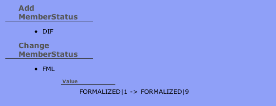

手作り差分チェック (CraftDiff)
${indexlist}概要
HistoryHTMLやSchemaSyncCheck, AlterCheckなどの差分ロジックにおいて、独自の差分チェックを手作りすることができます。 @since 1.0.0
DBFluteの差分ロジックは、テーブルやカラム、プロシージャ(オプションにて)などを対象にしますが、トリガーや権限などはチェック対象ではありません。 そういったDBFluteのチェック対象外の要素を自由に追加することができます。また、マスタテーブルなどのデータもチェックできます。
"差分チェック対象を検索するSQL" を書いて所定の位置に配置しておくと、差分チェック時に実行され、 双方のスキーマの結果が比べられます。内部的には、検索結果がTSVファイルに出力され、そのTSVファイル同士が比較されます。
手作りのやり方
SQLファイルの用意
craft-diff で始まり .sql で終わるファイルを、[DBFluteクライアント]/schema/craftdiff 配下に作成します。 まずは、単に craft-schema.sql という名前のファイルでOKです。多くなってきたら分割していきます。
e.g. craft-schema.sqlの配置 @Directory
[DBFluteClient]
|-dfprop
|-...
|-schema
| |-craftdiff
| |-craft-schema.sql
|-...
そのSQLファイルの中で、差分チェック対象を検索するSQLを以下のルールに従って書きます。
- SQLの種類
- select文であること (結果セットを戻すSQL)
- ユニークキー
- select句の最初のカラムはユニークな値のものを
- 差分対象データ
- select句の二番目以降に差分対象のカラムを
- ソート順
- 指定なしでもいいが、ユニークキーがお奨め
- おまじない
- SQLの前に #df:assertEquals([差分タイトル名])# を
e.g. 会員ステータスのデータの差分をチェックするSQL @classificationDefinitionMap.dfprop
-- #df:assertEquals(MemberStatus)#
select MEMBER_STATUS_CODE as KEY, MEMBER_STATUS_NAME, DISPLAY_ORDER
from MEMBER_STATUS
order by KEY
;
上記の例では、会員ステータスという区分値系のテーブルの変更を監視するようにしています。 会員ステータスが追加されたり削除されたり、もしくはステータス名や表示順が変わったら差分として検知されます。 ただ、DESCRIPTIONカラムは含まれていないので、説明の内容が変わっても検知はされません。 あまり重要でないものを含めると差分ノイズになるので、バランス良くカラムを列挙しましょう。
また、タイトル名には、そのSQLで検索されるデータを業務的に表現する適切な名前をつけましょう。
あとは普通にタスク実行
あとは、普通に JDBC や Doc や AlterCheck などのタスクを実行すれば、対象のSQLが実行されて差分がチェックされます。 (設定したばかりの一番最初は、前のデータを保持していないので差分は発生しません)
差分の確認
差分結果の表示
検知された差分は、HistoryHTMLなどの差分HTMLの中で、通常の差分と同じように表示されます。
CraftDiffの例 
{kind=link}
この例では、HistoryHTML的な解釈をすると、会員ステータスに新しく "DIF" というステータスが追加されたということに加え、"FML" ステータスの情報に変更(表示順の変更)が入ったということがわかります。SchemaSyncCheck であれば、スキーマ間にこういった食い違いがある、ということになります。
select句の一つ目のカラムが追加や変更を判別するキーとなり、二つ目以降のカラムは変更時の差分チェックの対象データとなります。 チェック対象データのカラムが複数の場合は、単にパイプラインで連結された文字列として比較されるため、表示としてはどのカラムが変更になったのかはぱっと見でわからないこともあるかもしれませんが、 "何かしらの差分があるということがわかりさえすれば" というポリシーでの割り切りです。
改行含みorラージデータの差分
チェック対象データに改行が含まれている場合、もしくは、100文字以上のデータは、プロシージャの差分チェックのときと同じような感じで、ハッシュ値として比較され表示されます。 以下のようなフォーマットで差分が表示されます。(差分HTML上で見比べづらいので、変わったことだけを知らせる)
- Value
- [行数]:[文字数]:[ハッシュ値]
これもまた、"何かが変わった" ということさえわかれば、あとはエクセルデータを見るなりDBを覗くなりいくらでも確認する方法があるという割り切りです。 また、この後の説明で述べますが、DBFluteが出力するTSVファイルで確認もすることができます。
細かい差分の確認
改行が含まれるデータの表示はハッシュ値で割り切っていますが、細かく差分を見たい場合は、 DBFluteが差分チェックを実現するために出力しているTSVファイルを比べると良いでしょう。
差分チェックが行われると、(HistoryHTMLの場合) DBFluteクライアントの schema/craftdiff 配下に、craft-meta-[title-name]-[next-or-previous].tsv という形式でTSVファイルが出力されます。このTSVファイルには、差分チェックのSQLで検索された全てのデータが入っています。 DBFluteはこのTSVファイルを読み込んで差分をチェックしているのです。
e.g. craft-schema.sqlの配置 @Directory
[DBFluteClient]
|-dfprop
|-...
|-schema
| |-craftdiff
| |-craft-meta-MemberStatus-next.tsv
| |-craft-meta-MemberStatus-previous.tsv
| |-craft-schema.sql
|-...
TSVの出力先は、機能によって変わります。
- HistoryHTML
- DBFluteクライアントの schema/craftdiff
- AlterCheck
- DBFluteクライアントの playsql/migration/schema/craftdiff
- SchemaSyncCheck
- DBFluteクライアントの output/doc/craftdiff
ちなみに、差分チェックのSQLの仕様でソート順が任意なのにユニークキーを推奨としているのは、このファイルを参照するときに見やすくなるからです。 (差分チェックではキー同士でマッピングするためソート順は関係ないですが)
ただし、HistoryHTMLの場合は直近のTSVファイルしか残っていないため、過去の細かい差分を確認するときは、 バージョン管理システムからこのTSVファイルを探すことになります。
また、こうやって細かく差分が確認できるため、ストアドプロシージャの差分も CraftDiff でやってしまうという選択肢もあります。(DBFluteのプロシージャ差分の機能をOFFにして)
差分ロジックは共通
これらの差分チェックは、HistoryHTML, SchemaSyncCheck, AlterCheck などの差分ロジック全てに反映されます。SQLを書いて配置するだけで共通の差分ロジックとなります。
SQLの追加や変更した直後
HistoryHTMLのとき、差分チェックのSQLを追加した直後のDB変更では何も検知されません。 一つの前のDBの状態における検索結果データがないため、比較ができないからです。 その次のDB変更から差分チェックされるようになります。
また、同じくHistoryHTMLにおいて、途中でSQLを変更した場合、例えば、差分チェック対象のカラムを追加した場合、 それは差分として検知されてしまいます。気になる場合は、schema配下のdiffmapを直接修正して、差分を削除することもできます。
環境タイプごとの差分チェック
DBFluteの環境タイプによって、差分チェックをするかしないかを調整できます。 ReplaceSchemaのときと同じような感じでファイルの先頭に checkEnv([env-type]) を指定することで、その環境タイプだけで実行されるSQLファイルとなります。
e.g. diffworldという環境タイプのときのみ差分をチェックするSQL @craft-schema.sql
-- #df:checkEnv(diffworld)#
-- #df:assertEquals(MemberStatus)#
select MEMBER_STATUS_CODE as KEY, MEMBER_STATUS_NAME, DISPLAY_ORDER
from MEMBER_STATUS
order by KEY
;
-- #df:assertEquals(...)#
select ...
from ...
order by ...
;
...
テーブル区分値の差分
テーブル区分値の差分は、テーブルの分だけSQLを書けばチェックできますが、テーブル数が多い場合は大変です。 テーブル名に規則性があれば、一括でチェックすることができます(@since 1.0.1)。
assertEquals ではなく、assertTableEquals([title-name], [table-name-hint]) という形式でコメント上のメソッドを書くことで、一括チェックができます。このとき、便宜上SQLはダミーのものを書きます(無視されます)。
e.g. CLS_で始まるテーブルを一括チェック @craft-schema.sql
-- #df:assertTableEquals(TableCls, prefix:CLS_)#
select 'dummy'
;
チェック対象に含みたくないカラムは、第三引数で except:[colum-name]/[column-name]/... という形式でカラムを指定します(スラッシュ区切りで複数指定可)。
e.g. DESCRIPTIONカラムをチェック対象外に @craft-schema.sql
-- #df:assertTableEquals(TableCls, prefix:CLS_, except:DESCRIPTION)#
select 'dummy'
;
様々なスキーマの差分
権限の差分チェック
システムのテーブル(Oracleならデータディクショナリ)を検索することができれば、スキーマ内の "権限" も差分チェックすることができます。
e.g. 権限を差分チェックするSQL (Oracle) @craft-schema.sql
-- #df:assertEquals(Dic_SystemPrivilege)#
select USERNAME || '.' || PRIVILEGE as KEY, ADMIN_OPTION
from USER_SYS_PRIVS
order by KEY
;
-- #df:assertEquals(Dic_TablePrivilege)#
select OWNER || '.' || TABLE_NAME || '.' || PRIVILEGE as KEY, GRANTABLE, HIERARCHY
from USER_TAB_PRIVS
order by KEY
;
VIEWのSQLの差分チェック
VIEWは、デフォルトで自動生成対象なので select 句の構成に変更があれば普通のテーブルとして差分チェックされます。 ただ、where句だけの変更とか、SQLの中身が変わっただけの変更は検知されません。それを CraftDiff で検知できるようにすることもできます。
改行が含まれていること必至なので、差分結果はハッシュ値ですが、とにかく変わったということがわかれば、 あとは、ReplaceSchemaのDDLを比べるとか、バージョン管理システムの差分を調べるとか、何かしらのアプローチで違いを把握することはできるはずです。
e.g. VIEWのSQLを差分チェックするSQL (Oracle) @craft-schema.sql
-- #df:assertEquals(Dic_ViewSql)#
select VIEW_NAME as KEY, TEXT_LENGTH, TEXT
from USER_VIEWS
order by KEY;
;